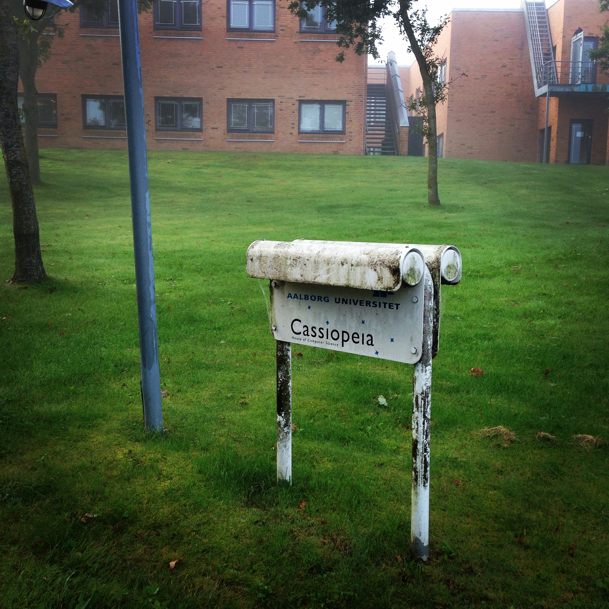
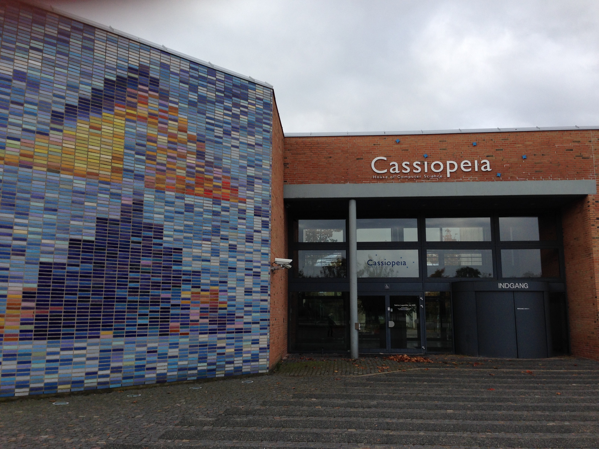
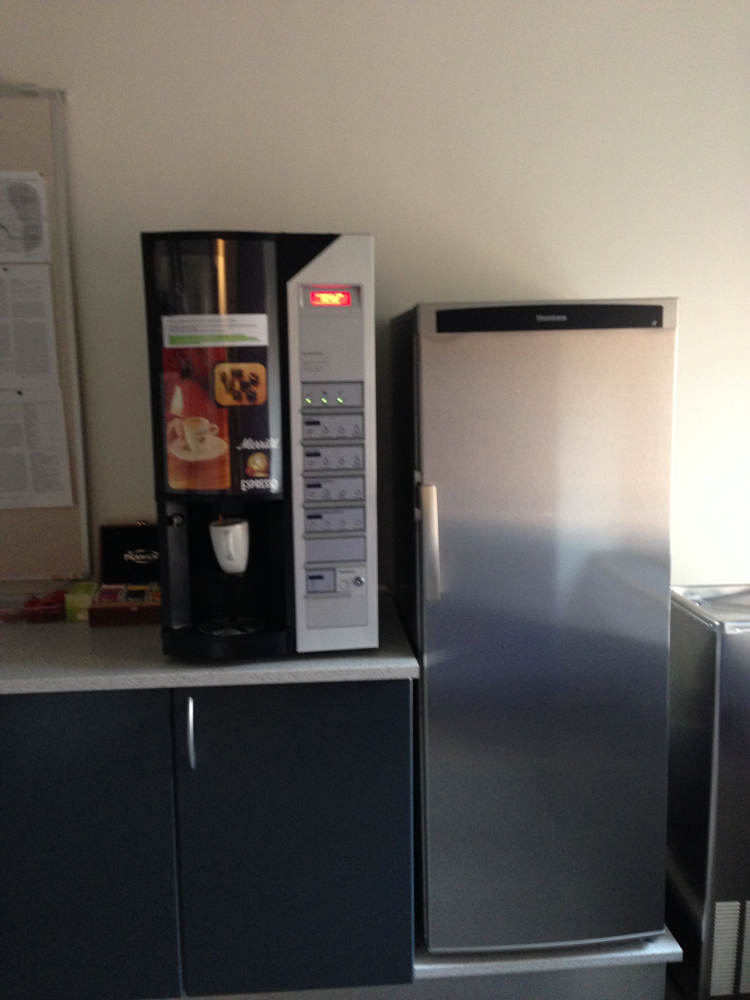
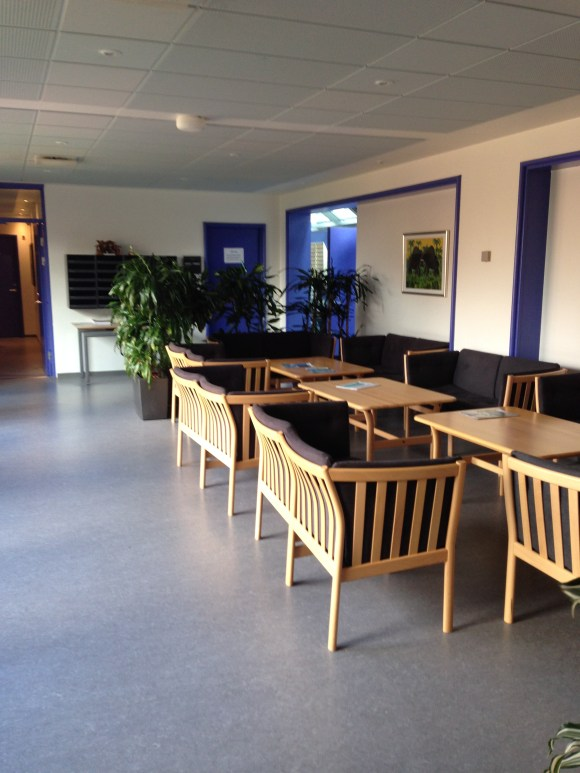
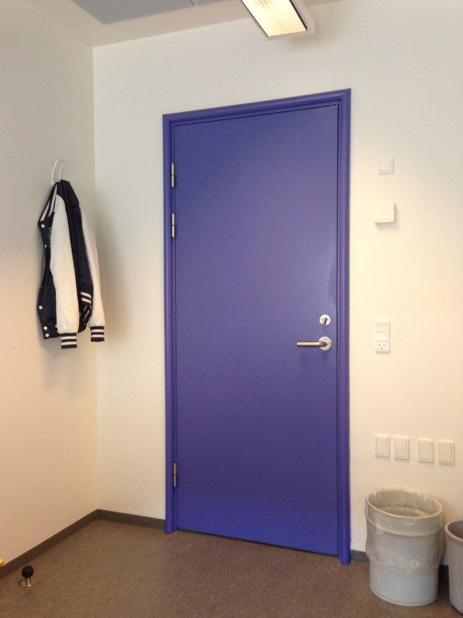
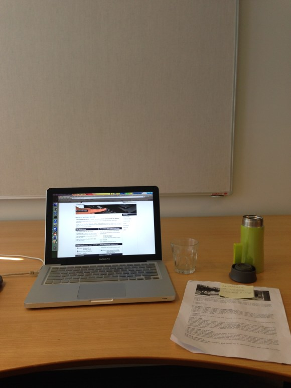
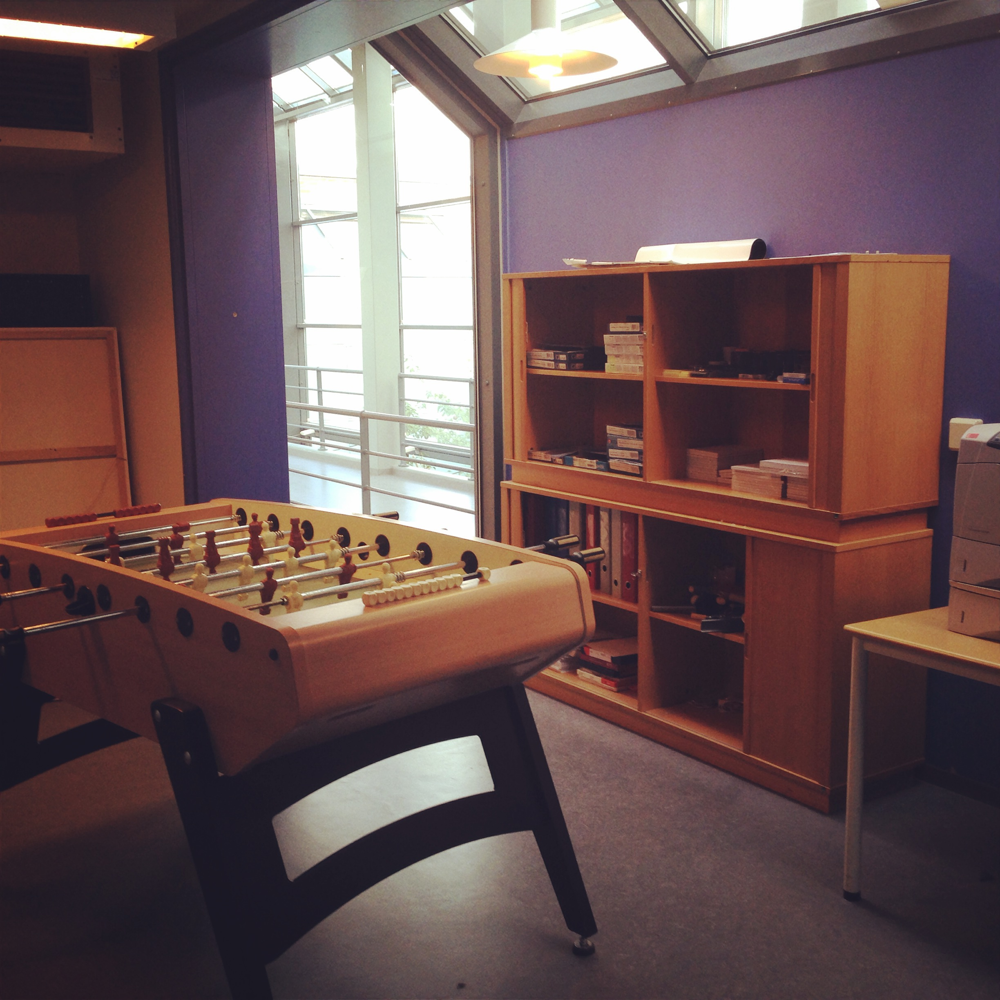

到达传说中的奥尔堡市已经12小时，与室友相见、收拾房间还有倒时差的第一觉、步行去触及这异样的风景、走进超市买到电话卡，每一件事都在高速连贯的持续进行，而我打鸡血的状态依旧保持很好，拿到电话卡，超市里买点早餐，走出超市的第一件事，就是拨通电话给系里的导师（好吧~我们就亲切地将他缩写为L老师），现在，我的任务是要去访问参观接下来这段时间的place of working。
11. Cassiopeia - 计算机系美美的别称
我承认我的单词储备不足以让我认识这个单词，亦或是我在天文或其他知识上的匮乏，当“Cassiopeia”第一次出现在系里秘书给我发来的employment letter时，我忍不住去翻了翻字典。看完解释后无疑出现了更大的疑问：仙后座和计算机科学究竟有着怎样的特殊关系，除了都以C字母开头之外？我不禁又想问，蓝翔究竟和挖掘技术有着怎样密不可分的关联？
这个问题至今依然没有遇到人给我合理解释，但无疑“仙后座”这么一个美美又充满幻想的词汇，的确可以用以代称我眼中看到的奥尔堡大学计算机系。
12. 绿地红砖
给L老师拨通了电话，他对我这鸡血的状态挺惊讶的，劝我回去休息 →_→ 哥这么勤恳的人自然是非要到系里去瞅瞅。根据老师给的指导，加之谷歌地图为辅助，我把自己领上了道~这道可不是一般的道呀，简直就是华容道，这种鲁迅先生笔下“溜达的人多了，就溜达出来的路”在奥尔堡各处皆可见到。当然，视野却是极好的，左手边是一片广袤的小麦田，右手边是一片圈起的草地，几只咩咩咩在里头啃得正欢。忍不住要模仿一下赵忠祥老师：在奥尔堡大学内部，种植业、畜牧业以及人类科学研究事业实现了毫无违和的和谐共生，令我心生赞叹。
L老师给系里大楼（实际上就两层）的描述是：一幢红色的楼房，四周都是草地。不去看不知道，这描述提取了最为明显的特征，它出现在你面前的姿态如此惬意和优雅，在阳光静静照耀的早晨，透过晨光出现在你的眼中，绿地红砖，这里就是Cassiopeia - House of Computer Science.
Cassiopeia 仙后座
13. 打入内部
门禁入口
大门口遇上来接我的L老师，寒暄了一会儿，他领我去“保卫科”（这个描述应该比较到位）取了办公室钥匙和校卡，随后我们穿过走廊向我的办公室走去，我抬头左右环视这幢双层建筑，中心地带的摆设看上去好似一家咖啡厅，无论是吧台还是各类面包水果无疑告诉你这是用餐地点（准确说法为 Central Canteen 中心小卖部，掏钱买东西边聊边吃的地方），而四周则如同星型网络结构，各个研究小组各自有一个Cluster，比如Machine Intelligence就在咱们Database & Programming Technologies（DPT）的旁边，各个Cluster就有一个独立的门进入，内部又有一番风景，不同Cluster的配色也不同，DPT内就是清新的海蓝门框。不同的Cluster内也有各自的小厨房（kitchenetter，内部有咖啡机、烤箱、微波、冰箱等），方便员工的日常用餐。
小厨房的咖啡机和冰箱
说话间，我就走到了我的办公室，就在小厨房的转角后面，真是方便呀~不过因为提前达到的原因，这间办公室还是空空如许，一位大叔正在安装桌子椅子，随后，跟着L老师与同样前来交流的山西小伙Jinpeng，系里的两位中国老师Y老师、X老师见面，Jinpeng又热心领我出外前去办理各种证件，如此般般真是期待入驻自己的新办公室。
14. 专享的十个平方
真正开启新的办公环境之旅是第二天的早晨，虽然阳光不再充裕，不能渲染我的激动心情，但是这独享的十个平方让我甚为点赞，作为一个研究室内定位的博士生，我此时发出了由衷的感慨，这地方真是太适合做实验了！这房间布局、这走廊结构那简直就是活脱脱的floorplan呀！打开办公室的门，透过两扇百叶窗，是蓝天白云红墙绿地，光栅打在身后的白板上，宽大的办公桌舒适的座椅，顶部悬挂的灯具烘出暖黄的光晕，在这种条件下怎么忍心不好好工作！？简直怒斥这种环境！我把系里发的指南用大头钉固定在墙上，打开笔记本，开始了农民伯伯一天的劳作。
组内的大厅
我的办公环境
开始劳作
15. 打印室
与L老师详谈了接下来给我安排的任务，接下来的时间里，要读几篇论文来熟悉下新的研究，这个时候免不了使用打印机（这回不是挖掘机了），问题就来了，打印室到底哪家有？这个问题提给L老师，自然不是中国山东找那啥。打印室与小厨房一样，每一个cluster内都有。
DPT内部的打印室
打印室……也用不着这样嘛，foosball就不说了，墙上还贴了一张纸条，号称桌上足球终极挑战赛，上头有各种比分记录，看来大家平常玩得挺开心。
和PP师兄聊天，他问我，打印机出来的印刷质量是不是很可观，我想可能是之前NUS使用高端纸张的原因，AAU打出来的papers和咱们实验室没有什么太大区别。不过学校提供的统一打印机服务也是高端不已，校内所有打印机实现了网络资源共享，并且提供随身打服务，可以根据IP找到物理位置最近的打印机取货，设置打印机的教程那也叫一个详细至极，StepByStep，我外婆要是懂英文都能搞定吧~
当然，最赞的是各种共享的办公用品，笔记本、便签纸、签字笔（都是pilot）、尺子、胶水等等等等，随取随用。
最后借机谈谈系里的门禁系统吧，周末以及工作日的早晨8点前下午4点后，想进入大楼需要刷校卡并输入pin码。而拿到手的钥匙是有不同权限的，比如楼内的工作人员的一把钥匙可以打开所有的房门，我的这一把钥匙则可以同时打开我们DPT组的大门、我办公室的门，以及DPT内打印室的门，真是方便简单。
下期预告：介绍完了令人心情愉悦的办公环境，下一期的节目将由新浪著名美食编辑洋圈圈独家冠名播出，带你一起走进丹麦的各大超市，了解这儿的柴米油盐酱醋茶，告诉你舌尖上的奥尔堡该如何炼就。